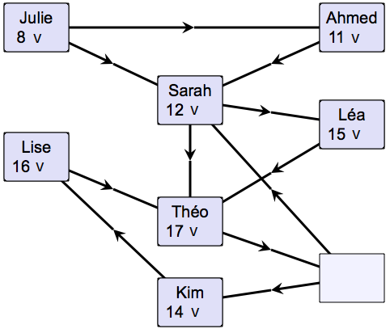
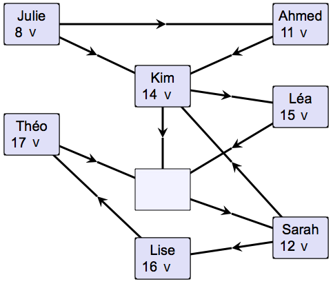

Raahaa vasemmalla annetut nimikyltit sopiviin paikkoihin vaaleansinisiin laatikoihin.
Kunkin nuolen pitää osoittaa nuoremmasta henkilöstä vanhempaan.
Kunkin nuolen pitää osoittaa nuoremmasta henkilöstä vanhempaan, jos nuolen kummassakin päässä olevassa laatikossa on nimikyltti.
Huomaa, että yksi laatikko jää tyhjäksi.
Ratkaisun voi löytää intuitiivisesti asettelemalla nimikyltit iän mukaan kasvavassa järjestyksessä, edeten nuolten mukaisesti. Tarkemmin ottaen voimme aina asettaa nuorimman vielä asettamatta olevan nimikyltin sellaiseen laatikkoon, jota nuolten mukaan edeltäviin laatikoihin on jo asetettu nimikyltit.
Tehtävässä on oleellista huomata, että laatikoiden ja nuolten muodostamasta kuviosta voi löytää kaksi silmukkaa: oheisessa kuvassa punaisella merkitty laatikot B, C ja E sisältävä silmukka sekä sinisellä merkitty laatikot A, C, E ja D sisältävä silmukka. Silmukalla tarkoitetaan, että jostain laatikosta on mahdollista päätyä takaisin samaan laatikkoon kulkemalla laatikosta toiseen nuolten mukaisessa suunnassa.
Silmukat ovat oleellisia, koska minkään silmukan kaikkiin laatikoihin ei voida laittaa nimikylttejä: tämä johtaisi nuolia ja ikiä koskevan säännön mukaan ristiriitaan, että laatikossa olevan nimikyltin ikä on itseään pienempi (kun samaan laatikkoon päästään silmukan nuolia pitkin uudelleen).
Koska tehtävässä saa jättää vain yhden laatikon tyhjäksi, on tyhjäksi jätettävä sellainen laatikko, joka kuuluu molempiin löytämiimme silmukoihin. Tällaisia laatikoita on kaksi: E ja C. Jos jätämme laatikon E tyhjäksi ja asettelemme nimikyltit muihin laatikoihin kasvavassa ikäjärjestyksessä, löydämme 1. ratkaisun. Jos jätämme laatikon C tyhjäksi, päädymme 2. ratkaisuun.
| 1. ratkaisu: | 2. ratkaisu: |
|  |  |
Tehtävän kuviot vastaavat tietojenkäsittelyssä hyvin yleistä tietorakennetta, suunnattua graafia. Suunnattuja graafeja voidaan käyttää esim. kuvaamaan joidenkin objektien (tässä nimikylttien) edeltävyysvaatimuksia (tässä ikäjärjestystä) niin, että graafin solmujen (tässä laatikoiden) väliset edeltävyysvaatimukset kuvataan suunnatuilla kaarilla (tässä nuolilla).
Suunnattua graafia voisi hyödyntää vaikkapa rakennusprojektin eri työtehtävien välisen aikataulun suunnittelussa. Esimerkiksi seinät pitänee rakentaa ennen kattoa, alakerta ennen yläkertaa, jne. Työtehtävien välinen suoritusjärjestys voitaisiin kuvata graafina, jossa solmut vastaavat työtehtäviä ja suunnatut kaaret edeltävyysjärjestystä.
Graafin kaarten (nuolten) suuntia noudattavan solmujen (nimikylttien) järjestyksen määrittämistä kutsutaan topologiseksi lajitteluksi, joka on yksi hyvin perustavanlaatuinen ongelma tietojenkäsittelytieteessä.
Katso lisää esim. https://fi.wikipedia.org/wiki/Graafi ja https://fi.wikipedia.org/wiki/Topologinen_lajittelu.